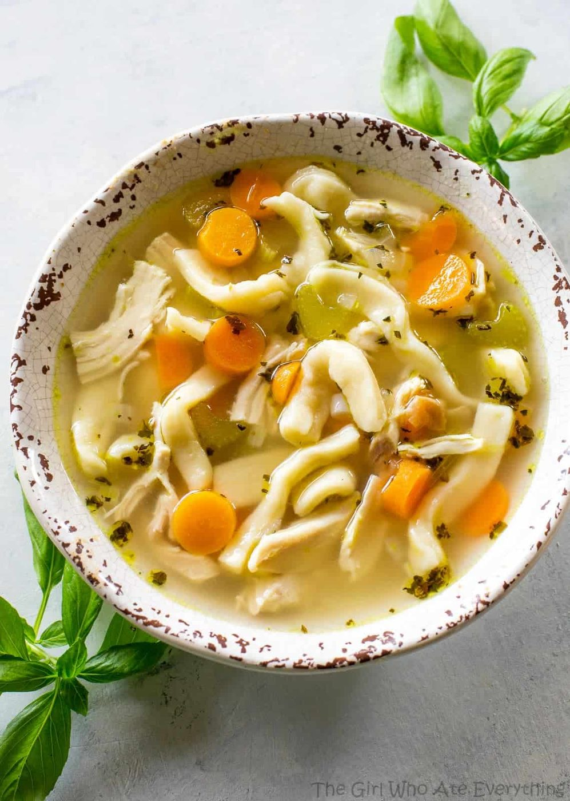
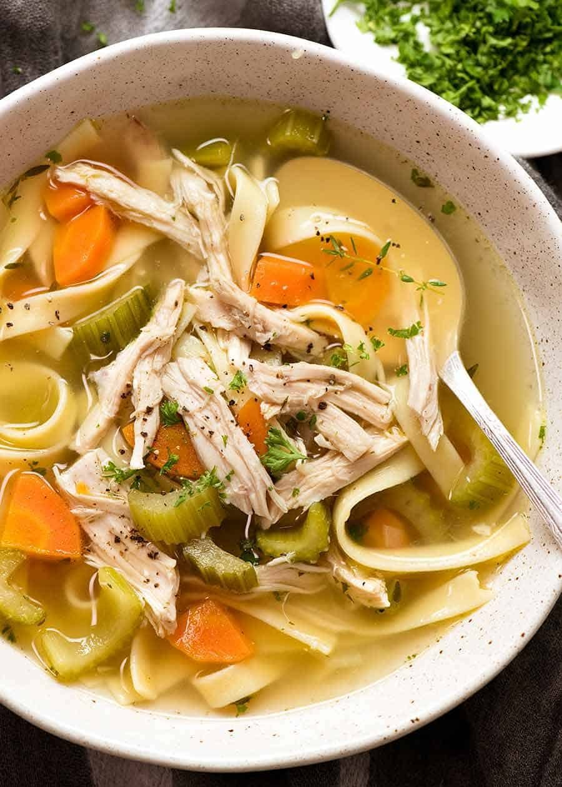
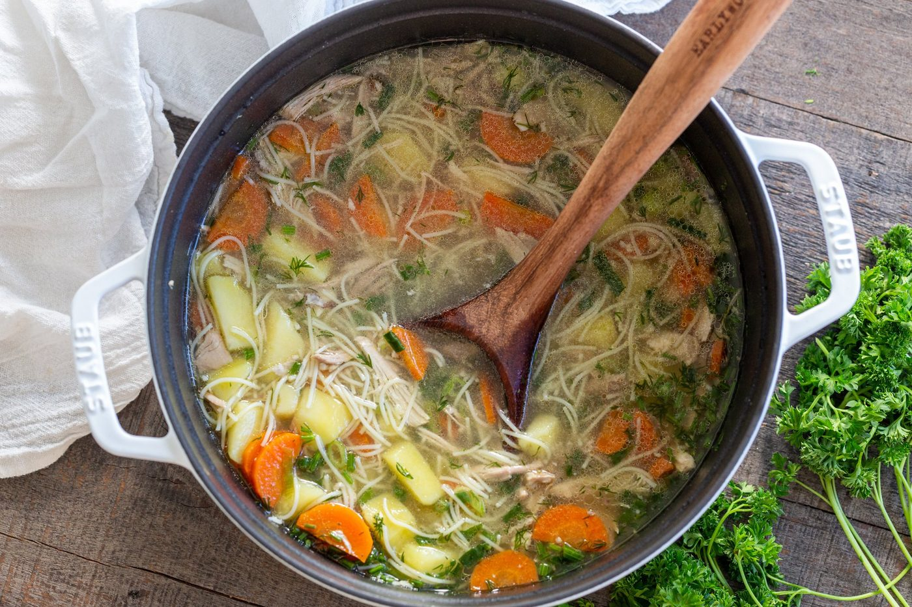
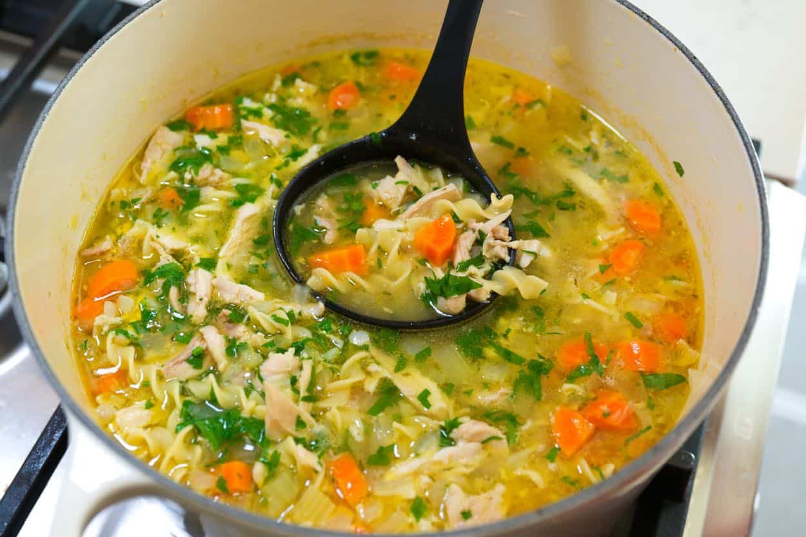
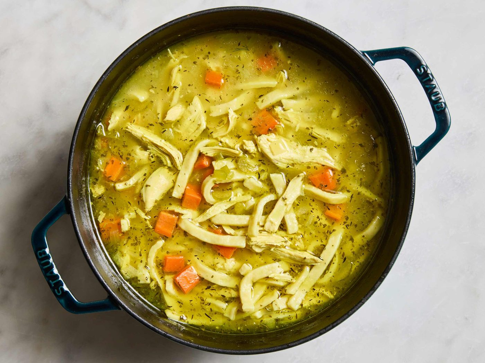
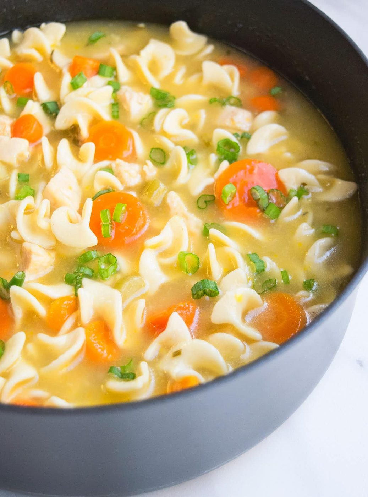
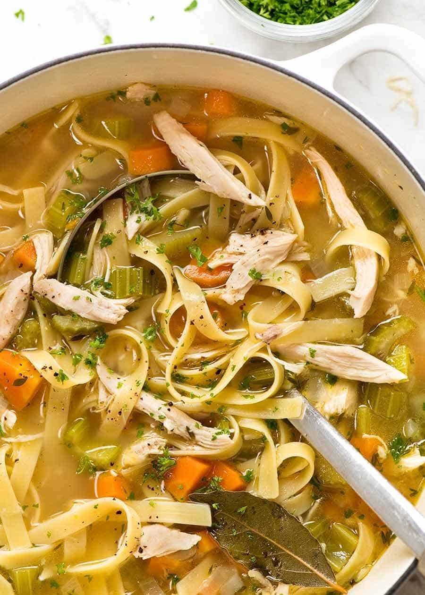

← Comfort Food
Chicken Noodle Soup
The soup your immune system asks for by name. Built from a whole bird, better than medicine.
The soup your immune system asks for by name. Built from a whole bird, better than medicine.
Chicken soup earned its folk-medicine status honestly — and the 2000 journal Chest actually published a study suggesting it slows neutrophil migration, i.e., the myth has a mechanism. But the real reason to make it from a whole chicken is flavor: bones give the broth body, cartilage gives it body-building gelatin, and the meat poached gently in the pot stays tender enough to pull apart with a spoon.
The architecture is a mirepoix base — onion, carrot, celery cooked down in chicken fat — plus herbs and a broth that is strained, not merely boiled together. Noodles cook separately or they drink your entire pot of broth and bloat. Assemble per bowl: broth, shredded chicken, noodles, herbs, and a squeeze of lemon that wakes the whole thing up.
serves 6 — tick items off as you shop; it saves as you go
Chicken, water, the whole vegetables, garlic, herb bundle. Bring to a bare simmer, skim the gray foam, then cook 45 minutes at the laziest possible bubble. Boiling makes tight, rubbery meat; simmering makes spoon-tender.
Remove the chicken; when cool enough, strip the meat into generous shreds. Strain the broth — the poached vegetables have given everything they own. Discard them.
In the soup pot, soften the sliced carrot, celery and onion in chicken fat or oil for 8 minutes. This second wave of vegetables stays in the bowl — they need bite and color, not surrender.
Pour the strained broth over the fresh vegetables, simmer 10 minutes, then return the shredded chicken. Season boldly — a big pot of broth eats salt.
Cook egg noodles in salted water two minutes under package time. Rinse briefly. Portion into bowls. This keeps the broth clear and the noodles al dente even on day two.
Ladle broth and chicken over noodles, shower with dill, and put a lemon wedge on the rim of each bowl. One squeeze changes the soup's whole personality. Pepper grinder on the table.







Images are web-sourced via image search and self-hosted. Original sources:
https://z-cdn.chatglm.cn/image-search-mcp/images-ppt/03d061328522.jpghttps://z-cdn.chatglm.cn/image-search-mcp/images-ppt/2a01224c145b.jpghttps://z-cdn.chatglm.cn/image-search-mcp/images-ppt/34e2abd76616.jpghttps://z-cdn.chatglm.cn/image-search-mcp/images-ppt/4f220a879169.jpghttps://z-cdn.chatglm.cn/image-search-mcp/images-ppt/7493a01decf6.jpghttps://z-cdn.chatglm.cn/image-search-mcp/images-ppt/9521a06ba5dd.jpghttps://z-cdn.chatglm.cn/image-search-mcp/images-ppt/e09851ba7ae8.jpgVerified working videos — click a card to load the embed.


Powered by GitHub Issues — the backup kitchen. One issue per recipe; your comment lands in the repo.